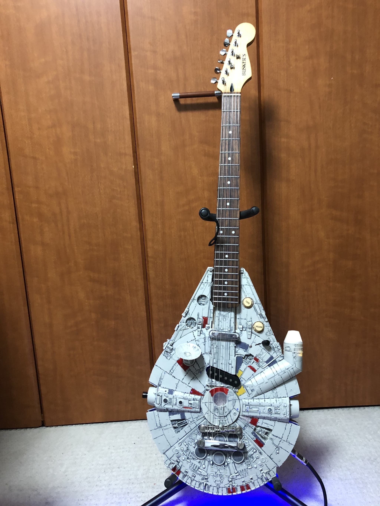
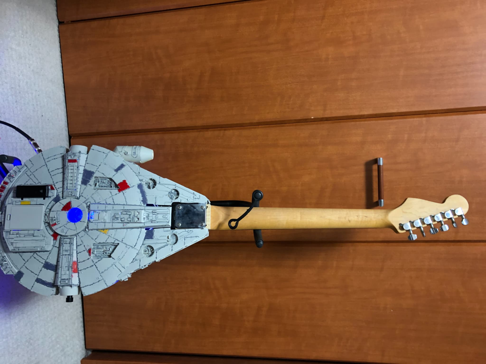

概要
ミレニアム・ファルコン号のプラモデルをボディとして活用し、ギターとして演奏できるように改造した作品です。 エンジン開口部とコックピットにはLEDを仕込み、スイッチで点灯できるよう配線を実装しました。SNSで見かけたコンセプトを再現し、ステージでも映えるビジュアルを狙っています。
外観


『Star Wars』に登場するミレニアム・ファルコン号のプラモデルをベースにギターへ改造。
エンジン開口部とコックピットにLEDを搭載し、スイッチ操作で点灯するインパクト重視のカスタムモデルです。
ミレニアム・ファルコン号のプラモデルをボディとして活用し、ギターとして演奏できるように改造した作品です。 エンジン開口部とコックピットにはLEDを仕込み、スイッチで点灯できるよう配線を実装しました。SNSで見かけたコンセプトを再現し、ステージでも映えるビジュアルを狙っています。

